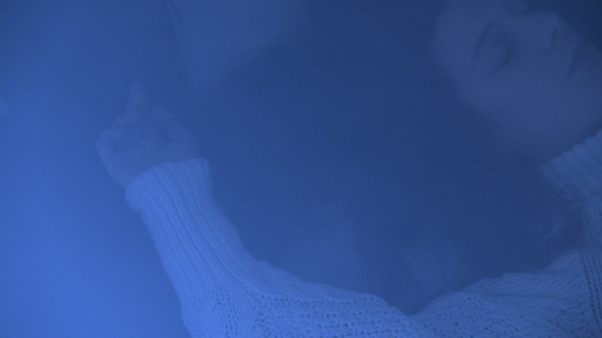
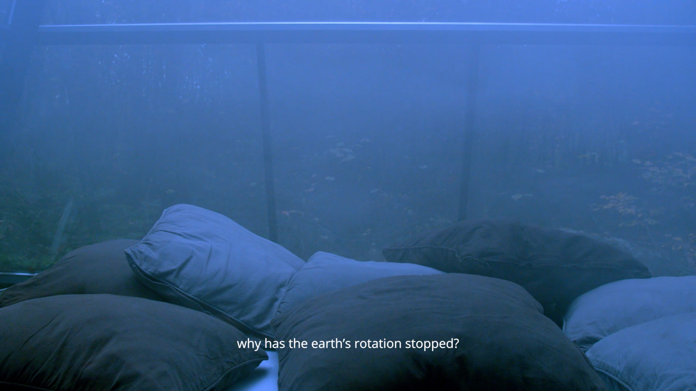
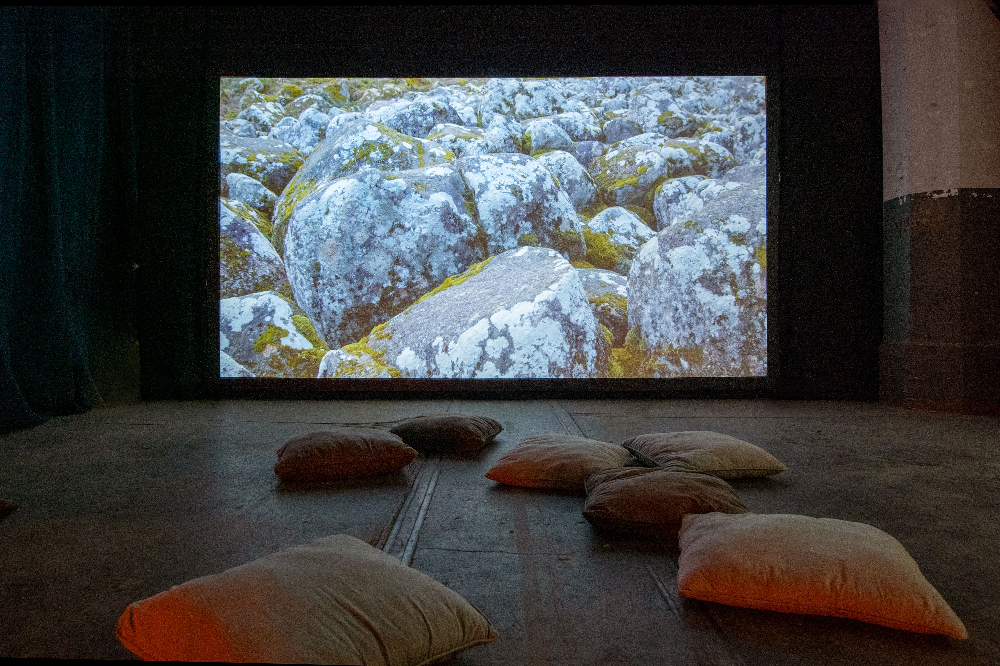
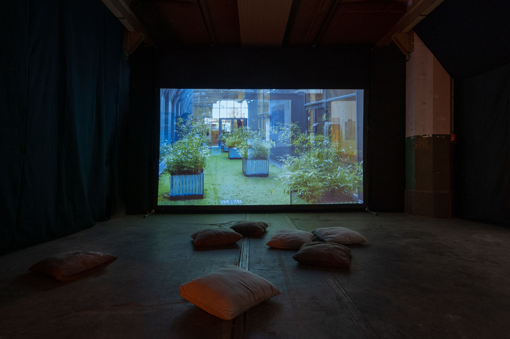
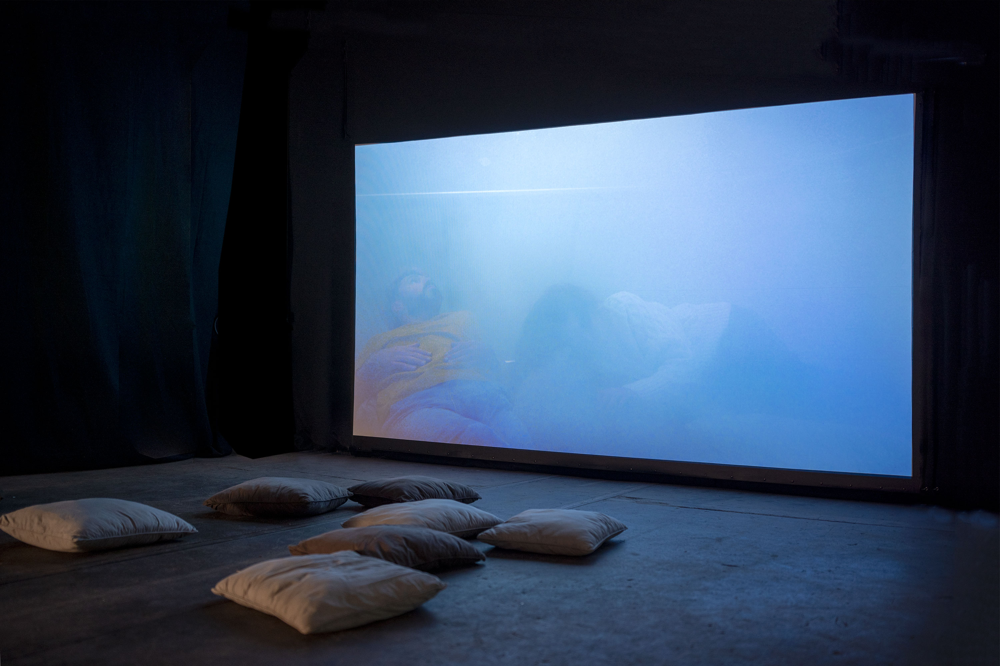
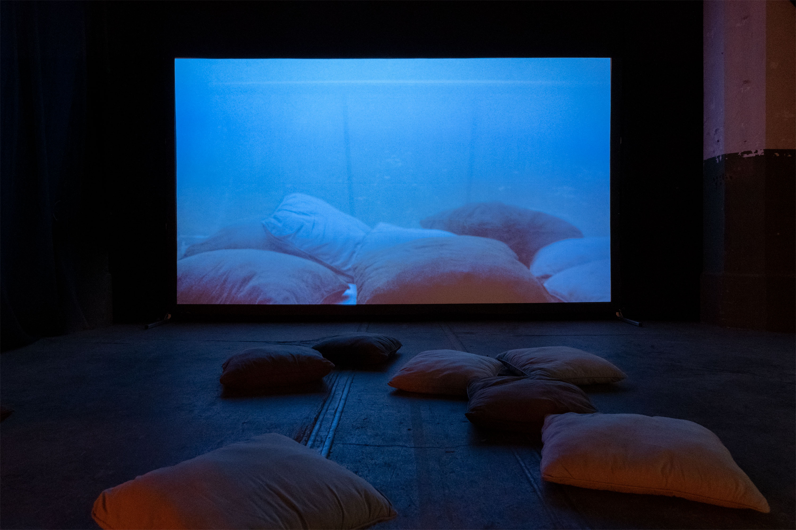
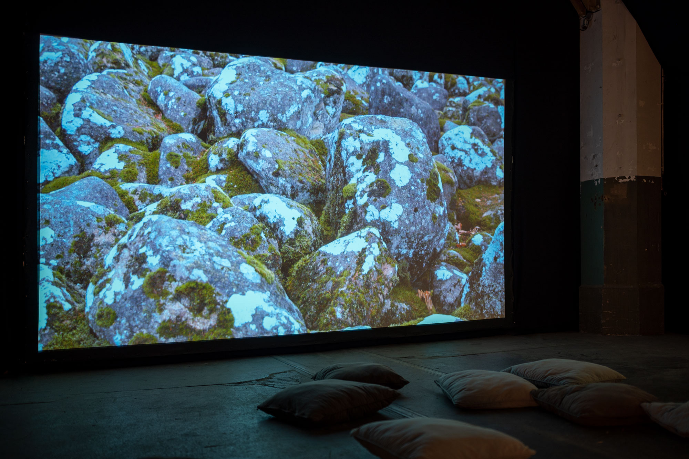
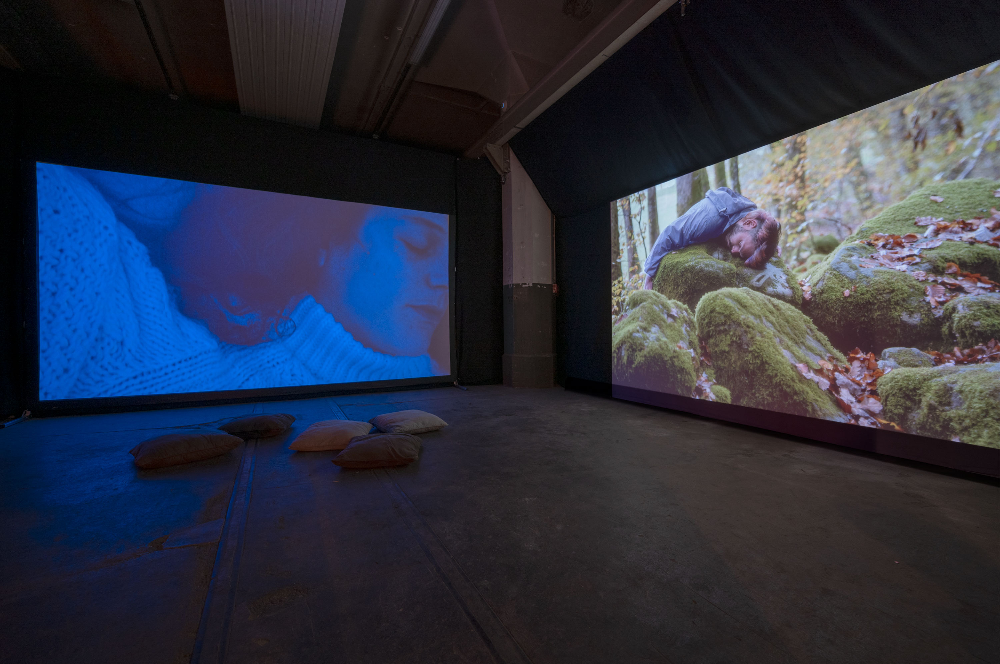

Jessica Arseneau


Solaire, 2022
Vidéo HD, son stereo
15:43 min.
Images fixes tirées de la vidéo
Dans Solaire, l'on passe d'une atmosphère intérieure à une atmosphère extérieure à la manière d'un rêve éveillé, dépourvu de toute action réelle, et c'est un interlude prolongé qui s’installe. Cette vidéo s'inspire de l'idée fictive du soleil restant immobile au crépuscule, comme une métaphore du temps qui devient homogène, ne régissant plus les cycles naturels de l'éveil et du sommeil. Elle nous transporte dans une machine dédiée à la simulation des rêves, dans un chaos rocheux et dans la contemplation des lichens comme organismes résistants à la luminosité permanente. Solaire fait référence au récit de science-fiction de J. G. Ballard, The Day of Forever (Le Jour de toujours, 1966) et cite également un poème d'Emily Dickinson à travers la voix narrative, tandis que les images défilent lentement sur l'écran, activant les éléments naturels et architecturaux de chaque lieu comme s'ils étaient les protagonistes d'un monde où le temps est inévitablement présent
Performeur.es : Kiki DeGonzag, Aurélien Finance
Assistante de projet : Laura Haby
Caméra : Jessica Arseneau, Laura Haby
Enregistrement audio : Luna Baby
Sources audio : BBC Library, waveplaySFX de Freesound.org
Citation : Emily Dickinson, The Sun kept setting — setting — still (publié en 1890)
Remerciements : Marie Paule Bilger, Jean-Jacques Delattre, Emmanuel Henninger, Jeremy Ledda, Florent Rusch, KM0, La Ferme Aventure, Motoco, Kunsthalle Mulhouse, Goethe-Institut Strasbourg






 Vues d'installation, Solaire (écran de gauche) et Ligne crépusculaire (écran de droit) Motoco, Mulhouse
Vues d'installation, Solaire (écran de gauche) et Ligne crépusculaire (écran de droit) Motoco, Mulhouse
Ce projet a été créé durant la résidence de création ALLEZ & ZURÜCK du Goethe-Institute Strasbourg, en collaboration avec la Kunsthalle Mulhouse, Motoco, Goethe-Institut Nancy, le Bureau des arts plastiques et supporté par OFAJ DFJW, DRAC Grand Est et Centre Français de Berlin.
Ce projet bénificie du support de ArtsNB.